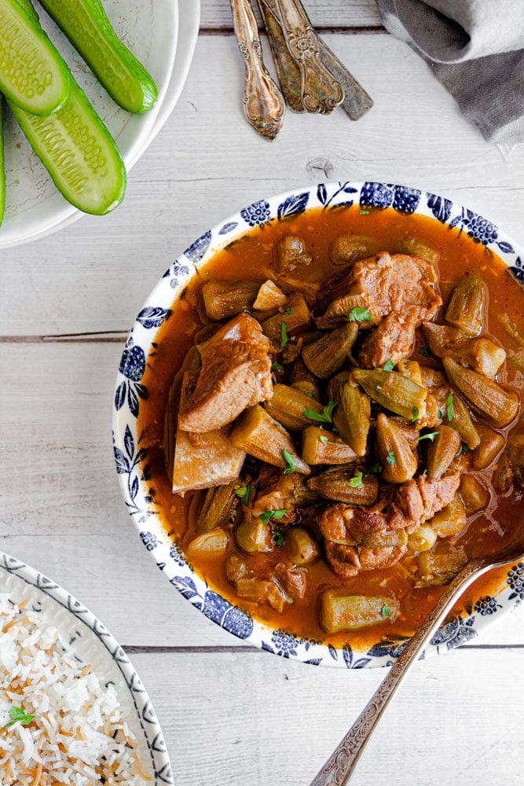

Timen

Description
Timen and Bamya is a dish that originates from Iraq, which directly translates to "Rice and Okra"
Ingredients
- Lamb Cubes
- Okra
- Salt & Pepper
- Tomato Paste and Tomato Sauce
- Onion
- Olive Oil
Steps
- In a pot, heat olive oil then add onion, garlic, and coriander then saute for about 2-3 minutes until fragrant
- Add chopped cilantro, stir until fragrant then stir in Jalapeno Peppers.
- Mix in the okra and tomato paste
- Keep stirring until tomato paste is well distributed
- Pour in tomato sauce, broth salt and peper. Bring to a gentle boil then reduce heat and simmer for 20 minutes.
- Add in cooked lamb cubes, stir to combine, and continue cooking on low until okra is tender
- Meanwhile, make the garlic relish or topping by heating olive oil in a non-stick skillet. Add garlic, coriander, cilantro, and chili peppers.
- Saute relish ingredients well for a minute or two until fragrant. Pour half the relish in the okra pot and let it simmer for another 4 minutes. Reserve the remaining half to top the bowls when serving.